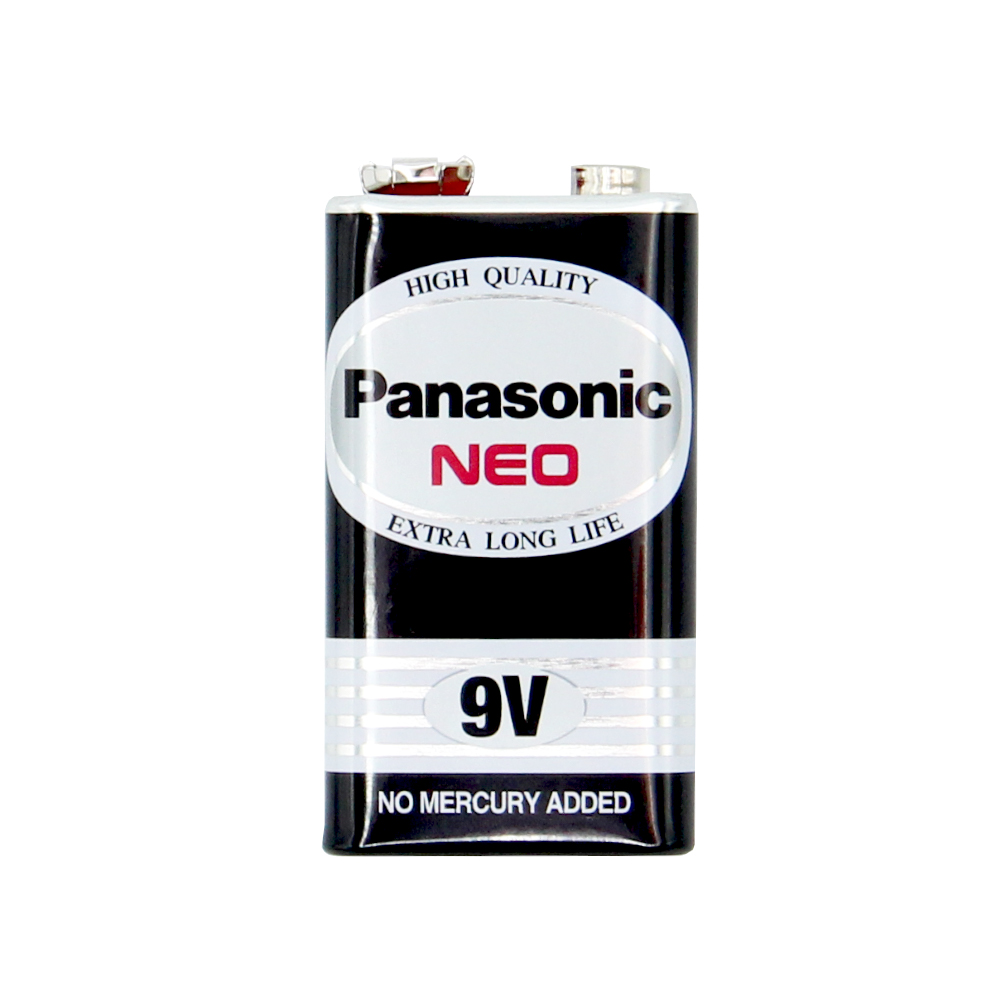

# อุปกรณ์
Soil Moisture Sensor

- Soil Moisture Sensor แบ่งเป็นส่วนดังนี้
- 1. โมดูลวัดและประมวลผลซึ่งมี ไอซี LM393 เป็นส่วนประกอบ
- 2. แผ่น PCB หรือ แท่งอิเล็กโทรด สำหรับเสียบลงดิน
- soil moisture sensor เป็นเซนเซอร์ที่สามารถวัดค่าความชื้นและแสดงผลออกมาได้ 2 รูปแบบ คือ
- 1. อ่านค่าแบบ Analog คืออ่านค่าความชื่นและให้ค่าตั้งแต่ 0 ถึง 1024 ถ้าดินแห้ง มีความชื้นน้อย ค่าที่วัดได้จะมีค่ามาก แต่ถ้าดินมีความชื้นมาก ค่าที่วัดได้จะมีค่าน้อย
- 2. อ่านค่าแบบ Digital คือเปรียบเทียบกับค่าที่ตั้งไว้ ถ้าค่าที่วัดได้มากกว่า ให้ logic HIGH ถ้าต่ำกว่าให้ logic LOW
Relay 5V

- Relay คือ electronic switch ชนิดหนึ่ง ซึ่งทำหน้าที่ควบคุมวงจรอิเล็กทรอนิกส์ จ่ายไฟให้กับอุปกรณ์ที่ถูกเชื่อมต่ออยู่ จุดต่อใช้งานมาตรฐาน ประกอบด้วย
- 1. จุดต่อ NC ย่อมาจาก normal close หมายความว่าปกติดปิด หรือ หากยังไม่จ่ายไฟให้ขดลวดเหนี่ยวนำหน้าสัมผัสจะติดกัน โดยทั่วไปเรามักต่อจุดนี้เข้ากับอุปกรณ์ที่ต้องการให้ทำงานตลอดเวลา
- 2. จุดต่อ NO ย่อมาจาก normal open หมายความว่าปกติเปิด หรือหากยังไม่จ่ายไฟให้ขดลวดเหนี่ยวนำหน้าสัมผัสจะไม่ติดกัน โดยทั่วไปเรามักต่อจุดนี้เข้ากับอุปกรณ์ที่ต้องการควบคุมการเปิดปิด
- 3. จุดต่อ C ย่อมากจาก common คือจุดร่วมที่ต่อมาจากแหล่งจ่ายไฟ
โปรโตบอร์ด

- บอร์ดที่มีไว้เพื่อเชื่อมต่อวงจรอิเล็กทรอนิกส์ โดยมีลักษณะเป็นแผ่นพลาสติก มีรูอยู่จำนวนมาก ภายในรูมีตัวนำไฟฟ้าซึ่งเชื่อมต่อกันอยู่
ถ่าน 9V

- สำหรับจ่ายไฟให้กับปั้มน้ำ
เทปพันสายไฟ
- นำมาใช้พันตรงสายขั้วบวกของปั๊มน้ำกับสายขั้วถ่านจากถ่าน 9V เพื่อประหยัดโดยจะได้ไม่ต้องบัดกรี
NodeMCU

- บอร์ดคล้าย Arduino สามารถเชื่อมต่อกับ WiFi ได้ สามารถเขียนโปรแกรมด้วย Arduino IDE เช่นเดียวกับ Arduino บอร์ดมีราคาค่อนข้างถูก
ขั้วถ่าน 9V

- ตัวเชื่อมต่อกับถ่านและสายไฟ
Micro USB Data Cable
- ใช้ในการเชื่อมต่อ NodeMCU เข้ากับเครื่องคอมพิวเตอร์ เพื่ออัพโหลดคำสั่ง
สายไฟ
- สายไฟทั่วไป มีไว้เพื่อเชื่อมต่ออุปกรณ์ต่างๆ
สายยาง

- สำหรับทางน้ำไหล
ปั๊มน้ำ DC 5V

- ปั๊มน้ำขนาดเล็กที่ใช้มอเตอร์ขนาด 5V ในการสูบน้ำขึ้นทางท่อยางไปยังภาชนะอื่น โดยการนำตัวปั๊มจุ่มลงไปในน้ำเพื่อสูบน้ำขึ้นมาใช้งานต่อไป
CORE DUMP
2/2020 Final Project
Computer Programming